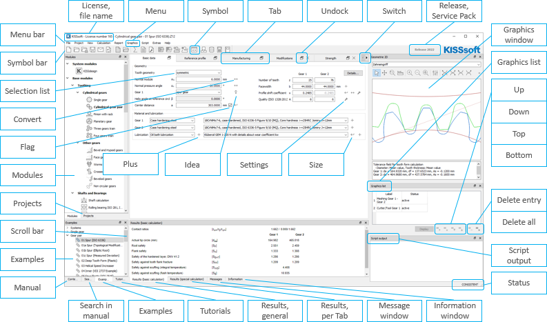

|
|
|


KISSsoft 用户界面中的元素
KISSsoft 是一款符合 Windows 规范的软件应用程序。普通 Windows 用户会从其他应用程序中认识用户界面元素，如菜单和上下文菜单、停靠窗口、对话框、工具提示和状态栏。由于开发过程中采用了国际通用的 Windows 风格指南，Windows 用户将很快熟悉如何使用 KISSsoft。

图 4.1：KISSsoft 用户界面中的元素
Elements in the KISSsoft user interface
KISSsoft is a Windows-compliant software application. Regular Windows users will recognize user interface elements, such as the menus and context menus, docking window, dialogs, tooltips and status bar, from other applications. Because the internationally valid Windows Style Guides are applied during development, Windows users will quickly become familiar with how to use KISSsoft.
Figure 4.1: Elements in the KISSsoft user interface